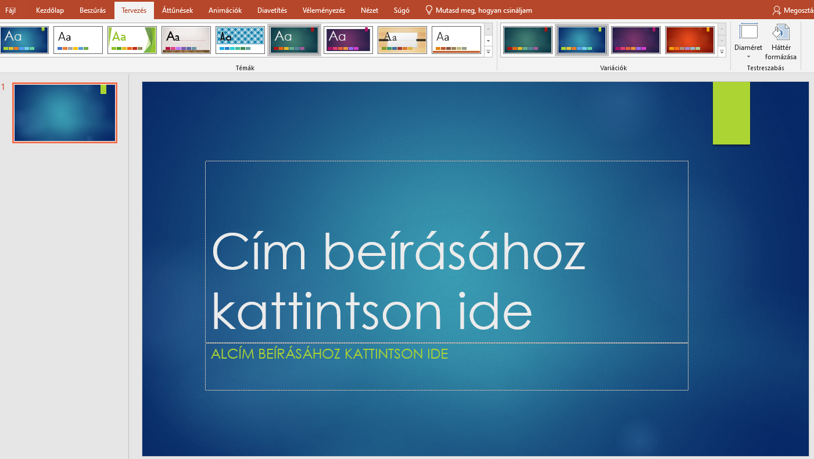
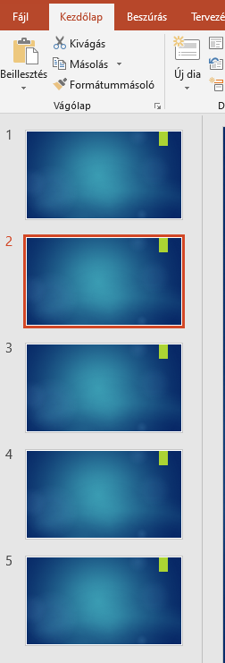
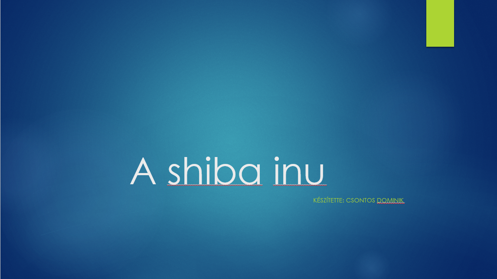
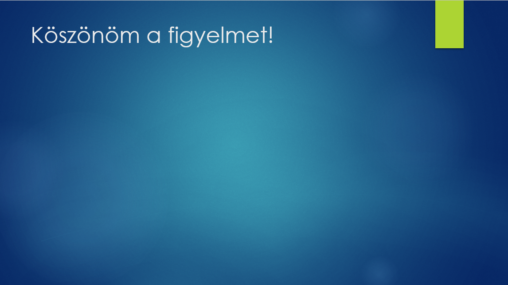
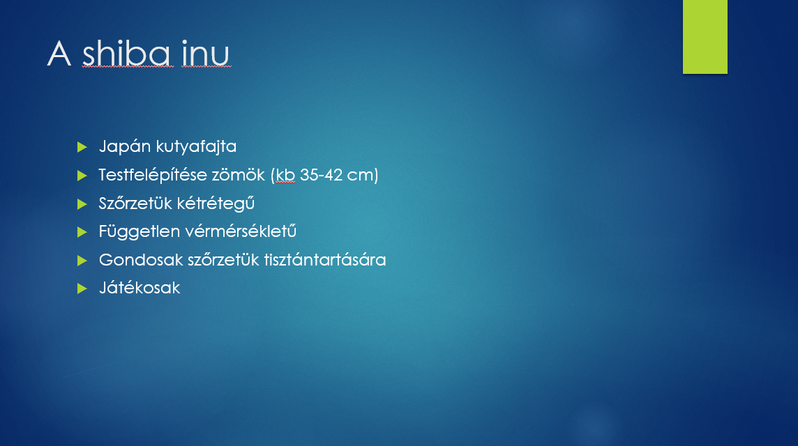
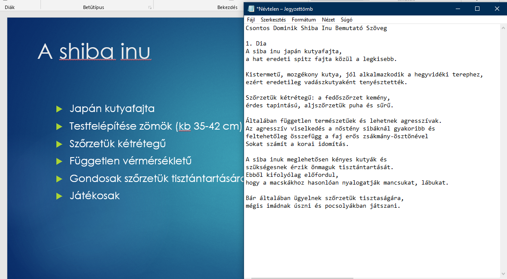
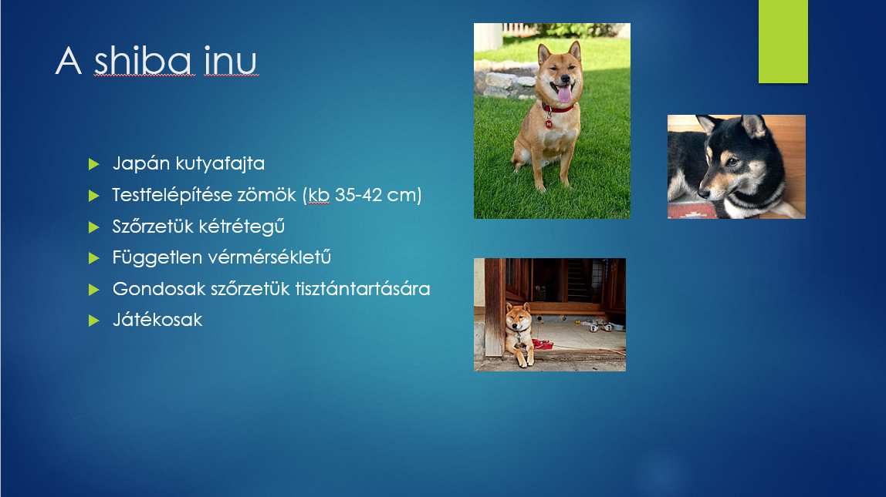
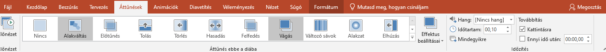

A prezentáció készítése és előadása elsőre önállóan kicsit bonyolult feladat tapasztalataim szerint ezért inkább elkészítek egy prezentációt amelyben használt alapelveket témától függetlenül lehet használni.
Első lépésként eltervezem, hogy milyen témában szeretnék prezentációt készíteni.
Ha ezt kiválasztottam a tervezés menüben választok egy tetszőleges témát.

Ezt választottam.
Ezután létrehozom az általam gondolt diamennyiséget, így kapok egy képet, hogy mennyire szeretnék mit kifejteni a témában.

Létrehoztam a kezdőlap fül új dia alatti kis nyíl segítségével három cím és tartalom diát, és egy csak cím diát a legvégére. Nem probléma ha túl sokat vagy túl keveset hozunk létre később módosítható lesz mindkét esetben.
Következő lépésként elkészítem az üdvözlő és elbúcsúzó diák szövegét mintegy keretet adva a prezentációmnak.

A kezdőoldal. Tetszőlegesen állíthatjuk a szövegek betűméretét, színét elhelyezkedését igazítását.

A lezáró dia. Egy egyszerű elköszönés, esetlegesen feltett kérdések megválaszolásakor jobb háttért biztosít mint maga a tartalma a prezentációnknak.
Ezek után foglalkozhatunk a tartalom diákkal.

Ennyi szöveget írtam fel az első diámra a téma általános bemutatásához, vannak akik szerint már ezt is érdemes lenne több diára tenni egy helyett. Ez témától és a kifejtésünk szintjétől függ érdemes mindig mérlegelni, hogy ne legyen zsúfolt se semmitmondó.
Ahhoz, hogy ezeket a témát körülölelő általános tudnivalókat kigyűjtsem az interneten tájékozódtam. Amellett, hogy a diára tömören kiírtam azokat a pontokat amikről szeretnék beszélni egy Word vagy jegyzetfüzet fájlban érdemes közben haladni a szöveggel is. A prezentáció előadása nem állhat abból, hogy felolvassuk ami a diákon található erre képesek a hallgatók előadó nélkül is. Prezentációnk a mondandónk kiegészítésére szolgál.

Így készül el a diával egyidejűleg a hozzá kellő szöveg. Jól látható, hogy az elmondani kívánt szöveg töredéke van csak megjelenítve a dián mintegy összefoglaló a témát illetően.
Ezután az interneten keresett képeket beillesztem az alapján, hogy miről szeretnék beszélni az adott dián.

Így áll végül össze egy adott dia.
Prezentációm további oldalain hasonló módszerrel kifejtem azokat a témaköröket melyeket szeretnék még érinteni. Jelen esetben: Gondozása, tanítása, kiknek ajánlok ilyen fajta kutyust.
Így elkészül a prezentációm. Következő lépésként az áttűnések menüben keresek egy szimpatikusat, és kiválasztom majd a mindegyikre gomb segítségével egységesen hozzáadom minden diámhoz.

Majd az animációk fül segítségével további megjelenési stílusokat tehetünk egyes szövegekhez vagy képekhez.
Ezzel könnyen túlzásba lehet esni ha minden sor szövegre külön animációt teszünk így inkább csak indokolt helyzetben javaslom. Ha például a kép kitakarja a szöveget be lehet állítani hogy csak azután jelenjen meg ha a szöveget elmondtuk.
Utolsó bár egyik legfontosabb feladat ami hátramaradt, a diavetítés fül segítségével elpróbálni prezentációnkat. Érdemes átnézni elírások és megfelelően láthatóság miatt. Közben a szövegünket felolvasni, hogy kapjunk egy képet mennyi időt fog igénybe venni.